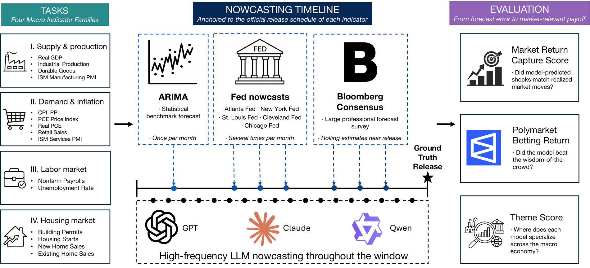
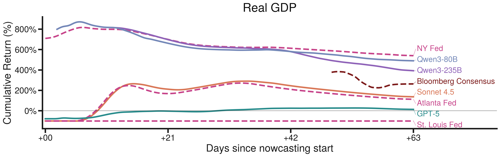
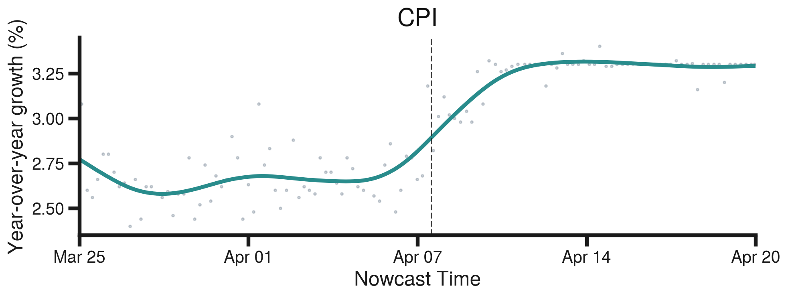
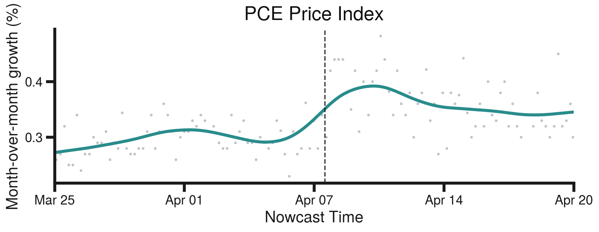

LLM agents nowcast sixteen U.S. macro indicators in real time. We score them
against the equity market, prediction markets, and professional economists.
Why a live benchmark?
Nowcasting means estimating an indicator before it is officially released.
Central banks staff whole teams to do it, and an LLM agent can be asked far more often than any
of them.
The issue is LLM memorization leading to data contamination.
GDP and CPI are among the most reported numbers on earth, so their past values are almost
certainly memorized during pretraining, and testing on old releases measures recall rather than
nowcasting.
LiveMacroEval scores only nowcasts made before the release, which keeps it
clean by construction.

Sixteen indicators, hourly nowcasts across the pre-release window, two
market-grounded scores. The window opens in the final week of the reference month and closes
at the official release, weeks to months later. The agent decides when to search, and what to
search for.
The sixteen indicators
Who we compare against
Human experts
Federal Reserve regional banks
Institutional nowcasts, where they exist.
Consensus & econometrics
Bloomberg ECOS and auto-ARIMA
Bloomberg
ECOS is the professional economist consensus, covering all sixteen indicators, and it is
famously hard to beat. auto-ARIMA is a univariate time-series baseline, refit at the start
of every window.
How we score
Plain error on the released level ignores that indicators differ in economic weight. We use two
market-grounded scores instead. Full definitions and estimation are in the paper.
Metric 1
LiveMacro Score
Macro surprises move equity prices. We weight each indicator by its measured
effect on S&P 500 futures at the moment of release, so sixteen accuracies collapse into
one comparable number. +1 is perfect, 0 ties the consensus, −1 is
arbitrarily worse.
Metric 2
LiveBetting Score
Every hour before a release we bet $1 on the prediction-market bucket holding
the agent's latest nowcast. Prices are the crowd's own odds, so liquidity is priced in:
beating a confident crowd pays a lot, agreeing with it pays little. The score is unit-free,
so it aggregates across very different indicators.
Leaderboard: LiveMacro Score
#
Model
LiveMacro
90% CI
Events
vs. consensus
Loading…
—
Real-time return: LiveBetting Score
On real GDP four agents finish the window with positive cumulative returns, and three beat the
Atlanta Fed, with only the New York Fed ahead. On the unemployment rate the leading agent
finishes above the Chicago Fed.
CPI is the exception. The Cleveland Fed and the Bloomberg consensus still beat every agent —
a real limit on indicators where institutional models are tuned to known economic structure.

Real GDP — cumulative LiveBetting return across the February and March windows.Unemployment rate — cumulative LiveBetting return.CPI — cumulative LiveBetting return.
Where the skill is
Six months live. The top agent ties the professional consensus overall, but that aggregate
hides sharp differences across the economy.
—
Agents beat the consensus on Supply & Production and on Housing, both of which lean on
higher-frequency components that reward updating inside the window. They fall behind on Demand
& Inflation, where well-anchored expectations protect the professionals. The Labor Market
sits near zero for every model, consistent with a signal-to-noise ceiling on the household
survey.
Tool and agent design
Configuration
LiveMacro
—
Watching a belief update
GPT-5's March 2026 CPI nowcast sits near 2.7% through early April, then jumps to about 3% on
April 8 and tracks the realized print from there. Two scheduled events land inside that window:
a large gasoline-inventory drawdown, and FOMC minutes flagging upside inflation risk. The size
of the revision matches a back-of-the-envelope gasoline contribution under BLS expenditure
weights.

March 2026 CPI. The dashed line marks 10:30 ET, April 8, 2026.

March 2026 PCE price index — the same shift, in the same window.
Citation
@inproceedings{zhao2026livemacroeval,
title = {Can LLMs Take the Pulse of the Economy? A Real-Time Evaluation
of LLM Nowcasts on Macroeconomic Indicators},
author = {Zhao, Xinyue and Zhang, Ruiyi and Ye, Liqin and
Cao, Rui and Xie, Pengtao and Chava, Sudheer},
booktitle = {Proceedings of EMNLP},
year = {2026}
}